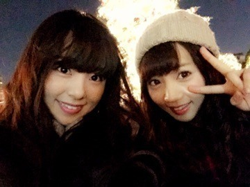
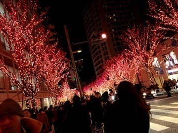
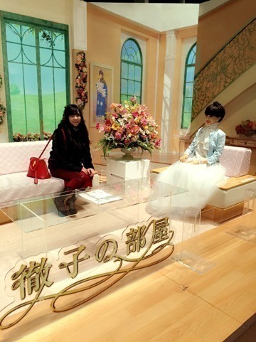
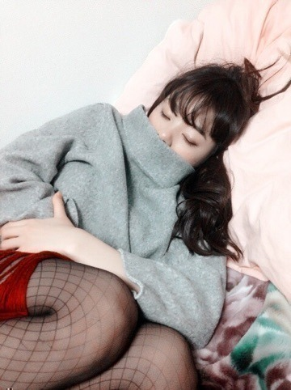

| 2015/01 18 Sun | 今さらあ？かな❤️ わら まにblog。 |
こんにちわあ（＾ω＾）
ろってぃ−だよ？まにだよ？
どんどん寒くなってきましたね（＾_＾）
でもさ,ピークに寒いのって来月だよねえ？
私はまだ体調こわしてないよ❤️
皆も手洗いうがいして，後は風邪なんか引いてたまるかっ！って気持ちで頑張ってね？わら
そ−いえばさ−,Xmas24と25何して過ごしたかblogに書いてなかったよね？
24日はね。 あみと2人でずっとデート！

恵比寿で待ち合わせでイルミネーション見て
六本木に移動して かずみにオススメされたお店でご飯食べて,
そっからずぅ～っと綺麗なイルミネーション見ながらぶらぶらお散歩❤️
女2人のXmasだけど本当楽しかった（＾ω＾）

寒い冬の夜は ブルー系よりレッド系のイルミネーションの方が暖かく感じて好き.＊

徹子さんの部屋にもお邪魔してきました❤️わら

そして25日はせっちゃんとディズニーの駅にあるイクスピアリでまったりして,その後せっちゃん家にお邪魔して めっちゃまったりしてました（＾ω＾）
知らない間に寝てたみたいです❤️

だってお布団が気持ちよかってんもん。。
せっちゃんだいすきーっ。
せちゃんは私の親友です.＊
じゃあこれから握手会なので,そろそろ行ってきます！
またね～（＾ω＾）
コメント(210)
2015/01/18 13:12